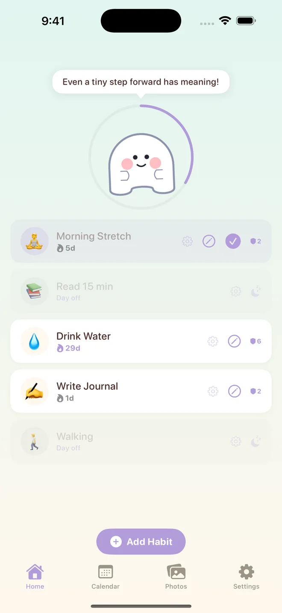
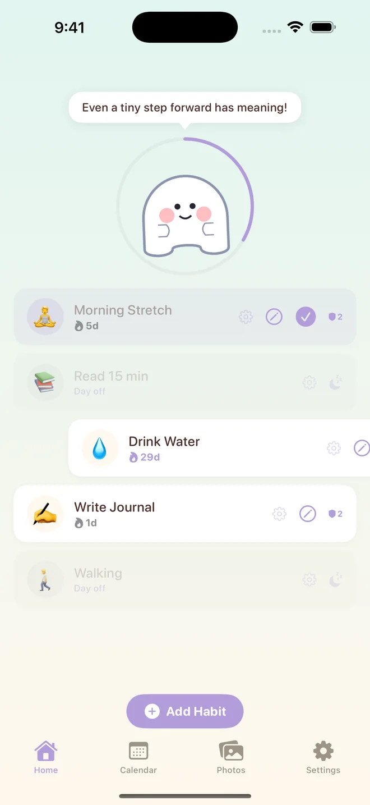
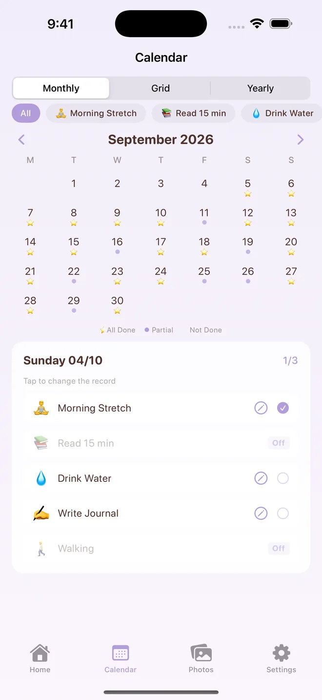

Marutto has a feeling today's gonna be lucky! No evidence though!
A chatty companion. A little more fun every day.
Turn daily habits
into adventures.
Meet Marutto, your chatty little habit companion. A cheer when you finish, a smile along the way, and a travel photo when you complete all your daily habits. Come for your habits. Look forward to seeing Marutto.
iPhone & iPad / Free with ads / No account needed
Meet Marutto
250travel photos to collect


Marutto has a feeling today's gonna be lucky! No evidence though!
250travel photos to discover
✓swipe to log a completed habit
FREEfree, with no account needed
MEET YOUR CHATTY LITTLE COMPANION
A chatty little companion.
A reason to come back.
A cheer, some encouragement, and the occasional silly little thought. Marutto is your friendly habit fairy, cheering on every small step. What will it say today?
Wow! You did your reading! Marutto is thrilled!
Resting isn't a bad thing. Marutto guarantees it!
There were clouds on Mt. Fuji's peak, and Marutto wanted a hat too!

Pick a moment and get a little taste of Marutto’s chatter.
Examples of messages from the app.
A little hello, every visit.
Greetings change with the time of day and the seasons. A little everyday chatter might make you smile.
Every win deserves a cheer.
Even small achievements get some encouragement from Marutto. Give your next step something to look forward to.
On your side on days off, too.
When things don’t go to plan, a gentle message helps you start again at your own pace.
01 — LITTLE BY LITTLE
Make progress.
Look forward to more.
A cheer for every win. A travel photo when you finish all your daily habits. Give your next little step something to look forward to.
01

A SMALL STEP FORWARD
One swipe.
One step forward.
Swipe a habit to mark it done. Undo a completion or edit earlier records from the calendar.
Tap for a little everyday win
Website demo
On good days and difficult days, Marutto cheers you on.
EVERY LITTLE DAY COUNTS
See your progress.
Feel your confidence.
Explore your monthly calendar, habit grid, and yearly history. You can also add notes to each habit.
02

02 — A WORLD OF LITTLE REWARDS
Everyday habits.
A world to discover.
250✦
travel photos to collect


Keep your habits. Collect travel memories.
Complete all your daily habits to earn a travel photo. Discover 250 photos with Marutto’s travel diaries and fun facts. You can also watch a rewarded video ad for a bonus photo.
Share photos and travel diaries
Open a collected photo and use the Share button to share the photo and diary, together with the app link and #MaruttoTracker.
03 — AT YOUR OWN PACE
A little more you. A little more doable.
Follow your own rhythm
Choose active weekdays, reminders, and when your day begins. Check today’s progress from your Home Screen widget.
Protect your streak with shields
Earn a shield every seven days in a row. Shields can protect your streak when you accidentally miss a day. You can turn this feature on or off in Settings.
18 language and regional options
Enjoy the interface, Marutto’s messages, and travel diaries in your preferred language.
Is it free to use?
The app is free to download and use. It includes ads, with optional rewarded video ads for extra travel photos.
Do I need an account?
No account is needed. Your habit records are stored on your device. Available for iPhone and iPad with iOS 17 or later.